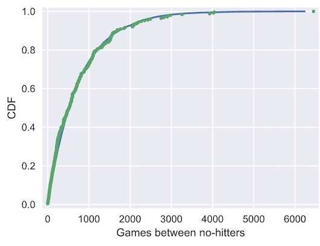
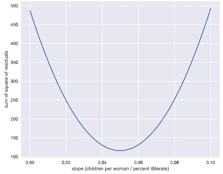

Parameter estimation by optimization
nohitter_times is an array with length of 251. array([ 843, 1613, 1101, 215, 684, 814,..])
# Seed random number generator
np.random.seed(42)
# Compute mean no-hitter time: tau
tau = np.mean(nohitter_times)
# Draw out of an exponential distribution with parameter tau: inter_nohitter_time
inter_nohitter_time = np.random.exponential(tau, 100000)
# Plot the PDF and label axes
_ = plt.hist(inter_nohitter_time,
bins=50, normed=True, histtype='step')
_ = plt.xlabel('Games between no-hitters')
_ = plt.ylabel('PDF')

Check if the data nohitter_times is exponential distribution.
# Create an ECDF from real data: x, y
x, y = ecdf(nohitter_times)
# Create a CDF from theoretical samples: x_theor, y_theor
x_theor, y_theor = ecdf(inter_nohitter_time)
# Overlay the plots
plt.plot(x_theor,y_theor )
plt.plot(x, y, marker='.', linestyle='none')
# Margins and axis labels
plt.margins(0.02)
plt.xlabel('Games between no-hitters')
plt.ylabel('CDF')
# Show the plot
plt.show()

It looks like no-hitters in the modern era of Major League Baseball are Exponentially distributed. Based on the story of the Exponential distribution, this suggests that they are a random process; when a no-hitter will happen is independent of when the last no-hitter was.
How is the parameter optimal?
Plot the mean as 1/2 tau and 2 tau to see how they fit the data
# Plot the theoretical CDFs
plt.plot(x_theor, y_theor)
plt.plot(x, y, marker='.', linestyle='none')
plt.margins(0.02)
plt.xlabel('Games between no-hitters')
plt.ylabel('CDF')
# Take samples with half tau: samples_half
samples_half = np.random.exponential(tau/2, 10000)
# Take samples with double tau: samples_double
samples_double = np.random.exponential(tau*2, 10000)
# Generate CDFs from these samples
x_half, y_half = ecdf(samples_half)
x_double, y_double = ecdf(samples_double)
# Plot these CDFs as lines
_ = plt.plot(x_half, y_half)
_ = plt.plot(x_double, y_double)
# Show the plot
plt.show()

The value of tau given by the mean matches the data best. In this way, tau is an optimal parameter.
Fit a linear regression line to a scatter plot
illiteracy and fertility are two arrays of data that represent the illiteracy rate (%) and average number of children born per woman in each country. (array length 161)
# Plot the illiteracy rate versus fertility
_ = plt.plot(illiteracy, fertility, marker='.', linestyle='none')
plt.margins(0.02)
_ = plt.xlabel('percent illiterate')
_ = plt.ylabel('fertility')
# Perform a linear regression using np.polyfit(): a, b
a, b = np.polyfit(illiteracy, fertility, 1)
# Print the results to the screen
print('slope =', a, 'children per woman / percent illiterate')
print('intercept =', b, 'children per woman')
# Make theoretical line to plot
x = np.array([0,100])
y = x * a + b
# Add regression line to your plot
_ = plt.plot(x, y)
# Draw the plot
plt.show()

slope = 0.05 children per woman / percent illiterate intercept = 1.89 children per woman
How the slope is optimal?
- Specify the values of the slope to compute the RSS. Use
np.linspace()to get 200 points in the range between 0 and 0.1 - Initialize an array, rss, to contain the RSS using
np.empty_like()and the array you created above. Theempty_like()function returns a new array with the same shape and type as a given array (in this case,a_vals).
# Specify slopes to consider: a_vals
a_vals = np.linspace(0, 0.1, 200)
# Initialize sum of square of residuals: rss
rss = np.empty_like(a_vals)
# Compute sum of square of residuals for each value of a_vals
for i, a in enumerate(a_vals):
rss[i] = np.sum((fertility - a*illiteracy - b)**2)
# Plot the RSS
plt.plot(a_vals, rss, '-')
plt.xlabel('slope (children per woman / percent illiterate)')
plt.ylabel('sum of square of residuals')
plt.show()

The minimum on the plot, that is the value of the slope that gives the minimum sum of the square of the residuals, is the same value you got when performing the regression.
Bootstrap confident intervals
bootstrap replicate: A single value of a statistic computed from a bootstrap sample.
Visualize bootstrap
rainfall is a numpy array, annual rainfall data measured at the Sheffield Weather Station in the UK from 1883 to 2015.
1. Generate the bootstrap samples from the rainfall array and plot ecdf. Note the use of for _ in range(50)
2. Plot the ecdf of the original data
for _ in range(50):
# Generate bootstrap sample: bs_sample
bs_sample = np.random.choice(rainfall, size=len(rainfall))
# Compute and plot ECDF from bootstrap sample
x, y = ecdf(bs_sample)
_ = plt.plot(x, y, marker='.', linestyle='none',
color='gray', alpha=0.1)
# Compute and plot ECDF from original data
x, y = ecdf(rainfall)
_ = plt.plot(x, y, marker='.')
# Make margins and label axes
plt.margins(0.02)
_ = plt.xlabel('yearly rainfall (mm)')
_ = plt.ylabel('ECDF')
# Show the plot
plt.show()
the bootstrap samples give an idea of how the distribution of rainfalls is spread.
Confidence intervals
Confidence intervals: if we repeated measurements over and over again, p% of the observed values would lie within the p% confidence interval.
def bootstrap_replicate_1d(data, func):
"""Generate bootstrap replicate of 1D data.
input: 1D data, fuction name
output: the value calculated using the bootstrap sample and function
"""
bs_sample = np.random.choice(data, len(data))
return func(bs_sample)
Generating many bootstrap replicates (the statistics of the bootstrap sample)
def draw_bs_reps(data, func, size=1):
"""Draw bootstrap replicates."""
# Initialize array of replicates: bs_replicates
bs_replicates = np.empty(size)
# Generate replicates
for i in size:
bs_replicates[i] = bootstrap_replicate_1d(data, func)
return bs_replicates
Bootstrap replicates of the mean and the SEM
Compute a bootstrap estimate of the probability density function of the mean annual rainfall at the Sheffield Weather Station. Remember, we are estimating the mean annual rainfall we would get if the Sheffield Weather Station could repeat all of the measurements from 1883 to 2015 over and over again. This is a probabilistic estimate of the mean. You will plot the PDF as a histogram, and you will see that it is Normal.
The standard deviation of this distribution, called the standard error of the mean, or SEM, is given by the standard deviation of the data divided by the square root of the number of data points. I.e., for a data set, sem = np.std(data) / np.sqrt(len(data)). Using hacker statistics, you get this same result without the need to derive it, but you will verify this result from your bootstrap replicates.
# Take 10,000 bootstrap replicates of the mean: bs_replicates
bs_replicates = draw_bs_reps(rainfall, np.mean, 10000)
# Compute and print SEM
sem = np.std(rainfall) / np.sqrt(len(rainfall))
print(sem)
# Compute and print standard deviation of bootstrap replicates
bs_std = np.std(bs_replicates)
print(bs_std)
# Make a histogram of the results
_ = plt.hist(bs_replicates, bins=50, normed=True)
_ = plt.xlabel('mean annual rainfall (mm)')
_ = plt.ylabel('PDF')
# Show the plot
plt.show()
The SEM we got from the known expression and the bootstrap replicates is the same and the distribution of the bootstrap replicates of the mean is Normal.
Calculate the confidence interval of the mean
np.percentile(bs_replicates, [2.5, 97.5])
Bootstrap replicates of variance
# Generate 10,000 bootstrap replicates of the variance: bs_replicates
bs_replicates = draw_bs_reps(rainfall, np.var, 10000)
# Put the variance in units of square centimeters
bs_replicates = bs_replicates / 100
# Make a histogram of the results
_ = plt.hist(bs_replicates, bins=50, normed=True)
_ = plt.xlabel('variance of annual rainfall (sq. cm)')
_ = plt.ylabel('PDF')
# Show the plot
plt.show()
Pairs bootstrap
Like the mean of the data, the slope and intercept from the linear regression of the data are also statistics (bootstrap replicate) of the data.
Instead of bootstrapping from the 1D data, bootstrap from the index. Then select the data pairs using the bootstrap index.
def draw_bs_pairs_linreg(x, y, size=1):
"""Perform pairs bootstrap for linear regression.
output: the bootstrap replicate of slope (size length array)
bootstrap replicate of intercept (size length array)
"""
# Set up array of indices to sample from: inds
inds = np.arange(len(x))
# Initialize replicates: bs_slope_reps, bs_intercept_reps
bs_slope_reps = np.empty(size)
bs_intercept_reps = np.empty(size)
# Generate replicates
for i in range(size):
bs_inds = np.random.choice(inds, size=len(x))
bs_x, bs_y = x[bs_inds], y[bs_inds]
bs_slope_reps[i], bs_intercept_reps[i] = np.polyfit(bs_x, bs_y, 1)
return bs_slope_reps, bs_intercept_reps
Pairs bootstrap of literacy/fertility data
# Generate replicates of slope and intercept using pairs bootstrap
bs_slope_reps, bs_intercept_reps = draw_bs_pairs_linreg(illiteracy, fertility, 1000)
# Compute and print 95% CI for slope
print(np.percentile(bs_slope_reps, [2.5, 97.5]))
# Plot the histogram
_ = plt.hist(bs_slope_reps, bins=50, normed=True)
_ = plt.xlabel('slope')
_ = plt.ylabel('PDF')
plt.show()
Plot bootstrap regression
# Generate array of x-values for bootstrap lines: x
x = np.array([0, 100])
# Plot the bootstrap lines
for i in range(100):
_ = plt.plot(x,
bs_slope_reps[i]*x + bs_intercept_reps[i],
linewidth=0.5, alpha=0.2, color='red')
# Plot the data
_ = plt.plot(illiteracy, fertility, marker='.', linestyle='none')
# Label axes, set the margins, and show the plot
_ = plt.xlabel('illiteracy')
_ = plt.ylabel('fertility')
plt.margins(0.02)
plt.show()
Hypothesis testing
Hypothesis testing: Assessment of how reasonable the observed data are assuming a hypothesis is true. Null hypothesis is the hypothesis that you are testing.
def permutation_sample(data1, data2):
"""Generate a permutation sample from two data sets."""
# Concatenate the data sets: data
data = np.concatenate((data1, data2))
# Permute the concatenated array: permuted_data
permuted_data = np.random.permutation(data)
# Split the permuted array into two: perm_sample_1, perm_sample_2
perm_sample_1 = permuted_data[:len(data1)]
perm_sample_2 = permuted_data[len(data1): len(permuted_data)]
return perm_sample_1, perm_sample_2
Permutation
The null hypothesis when using permutation is the two samples are identically distributed.
We will use the Sheffield Weather Station data again, this time considering the monthly rainfall in July (a dry month) and November (a wet month). We expect these might be differently distributed, so we will take permutation samples to see how their ECDFs would look if they were identically distributed.
for _ in range(50):
# Generate permutation samples
perm_sample_1, perm_sample_2 = permutation_sample(rain_june, rain_november)
# Compute ECDFs
x_1, y_1 = ecdf(perm_sample_1)
x_2, y_2 = ecdf(perm_sample_2)
# Plot ECDFs of permutation sample
_ = plt.plot(x_1, y_1, marker='.', linestyle='none',
color='red', alpha=0.02)
_ = plt.plot(x_2, y_2, marker='.', linestyle='none',
color='blue', alpha=0.02)
# Create and plot ECDFs from original data
x_1, y_1 = ecdf(rain_june)
x_2, y_2 = ecdf(rain_november)
_ = plt.plot(x_1, y_1, marker='.', linestyle='none', color='red')
_ = plt.plot(x_2, y_2, marker='.', linestyle='none', color='blue')
# Label axes, set margin, and show plot
plt.margins(0.02)
_ = plt.xlabel('monthly rainfall (mm)')
_ = plt.ylabel('ECDF')
plt.show()
Notice that the permutation samples ECDFs overlap and give a purple haze. None of the ECDFs from the permutation samples overlap with the observed data, suggesting that the hypothesis is not commensurate with the data. July and November rainfall are not identically distributed.
p-value: the probability of obtaining a value of your test statistics that is at least as extreme as what was observed, under the assumption the null hypothesis is true.
Calculate the perm replicates(single statistics) on the permuted samples for n(n = size) times
def draw_perm_reps(data_1, data_2, func, size=1):
"""Generate multiple permutation replicates.
size is the number of permutation samples generated
"""
# Initialize array of replicates: perm_replicates
perm_replicates = np.empty(size)
for i in range(size):
# Generate permutation sample
perm_sample_1, perm_sample_2 = permutation_sample(data_1, data_2)
# Compute the test statistic
perm_replicates[i] = func(perm_sample_1, perm_sample_2)
return perm_replicates
force_aand force_b are two arrays. The goal below is to test if the distributions of force_a and force_b are identical.
def diff_of_means(data_1, data_2):
"""Difference in means of two arrays."""
# The difference of means of data_1, data_2: diff
diff = np.mean(data_1) - np.mean(data_2)
return diff
# Compute difference of mean impact force from experiment: empirical_diff_means
empirical_diff_means = diff_of_means(force_a, force_b)
# Draw 10,000 permutation replicates: perm_replicates
perm_replicates = draw_perm_reps(force_a, force_b,
diff_of_means, size=10000)
# Compute p-value: p
p = np.sum(perm_replicates >= empirical_diff_means) / len(perm_replicates)
One sample test
The goal is to calculate the probability of getting a mean impact force less than or equal to what was observed for Frog B if the hypothesis that the true mean of Frog B's impact forces is equal to that of Frog C is true.
Source
https://www.datacamp.com/courses/statistical-thinking-in-python-part-1